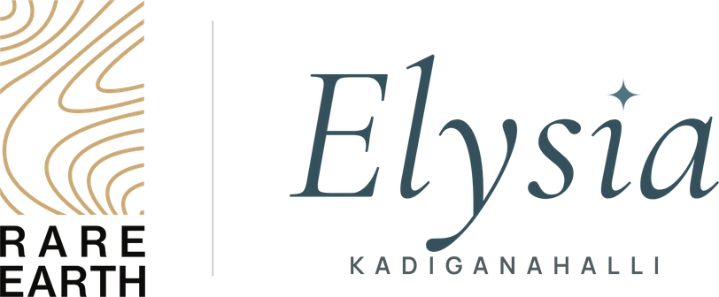
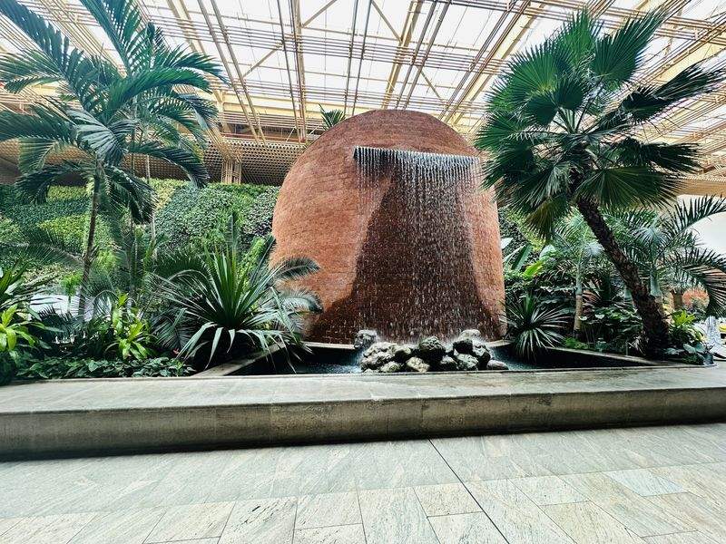
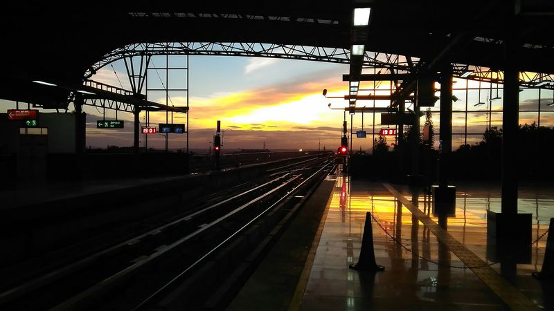

Thirty-five residential sites just off Bellary Road, on the way to the airport.
Sold out · Kadiganahalli, off Bellary Road (NH-44)Thirty-five sites, every one on a road.
Elysia is a compact layout of 35 residential sites at Kadiganahalli, a few hundred metres off Bellary Road on the way to Kempegowda International Airport. The sites run in two rows between two roads, so each one has its own road frontage, and a corner site of about 9,600 sq ft closes the layout at one end.
Two rows,one corner.
Rendered from Elysia's proposed layout drawing and turned on its side to fit the screen. Zoom in to read every site number; the colours show the three kinds of site.
- Sites 1 – 17About 30 × 46–52 ftAbout 1,390 – 1,560 sq ft each, facing one road
- Sites 18 – 34About 30 × 39–40 ftAbout 1,170 – 1,200 sq ft each, facing the other road
- Site 35The corner siteAbout 86 × 111 ft, about 9,600 sq ft, with road on three sides
35 sites on 54,481 sq ft, as stated on the layout drawing. Site dimensions and areas are measured from the drawing and approximate; ask us for the drawing itself.
On the roadto the airport.
Bellary Road is north Bengaluru's spine: the city's main road to Kempegowda International Airport, with the airport metro line now being built along it. Around Elysia, the land between Yelahanka and the airport is filling in with townships, business parks and schools.


✦ Getting around
- Namma Metro Blue Line (airport line)Under construction along Bellary Road
- Nearest planned stationsDoddajala · Bagalur Cross
- Suburban rail, Corridor 1 (KSR–Devanahalli)Planned, with stations at Doddajala and Bettahalasuru
- Kempegowda International AirportAbout 12 km
✦ Growing around it
- Embassy Springs township, 288 acresWithin about 5 km
- Godrej MSR City, 62 acresWithin about 5 km
- Birla Trimaya, 52 acresWithin about 5 km
- Tata CarnaticaWithin about 5 km
✦ Work
- Embassy Business Hub, Bellary RoadAbout 8 km
- BLR Airport City business park, being builtAbout 11 km
- KIADB Aerospace Park, with Boeing's engineering campusAbout 14 km
- Manyata Tech ParkAbout 18 km
✦ Schools, colleges & care
- Sir M. Visvesvaraya Institute of TechnologyAbout 5 km
- Stonehill International SchoolAbout 6.5 km
- Delhi Public School, Bangalore NorthAbout 8 km
- Manipal Hospital, YelahankaAbout 8.5 km
Distances are approximate road distances from the site, from OpenStreetMap routing (October 2026); “within about 5 km” is a straight-line distance. Metro and suburban rail are planned or under construction, and their dates can change. Names of other developments are given only to describe the area.
At Kadiganahalli,off Bellary Road.
Elysia sits a few hundred metres east of Bellary Road (NH-44), between Yelahanka and the airport. Ask us for directions and we will meet you on site.
Seen at Montira,our flagship.
These photographs are of Montira, our villa-plot community at Nandi Hills, not of Elysia. We show them so you can see the care we put into the land we develop: roads, planting and finish.


Good questions,straight answers.
Anything else you would like to know about Elysia?
Where exactly is Elysia?
Elysia is at Kadiganahalli in north Bengaluru, about 300 m off Bellary Road (NH-44), the city's main road to Kempegowda International Airport. The airport is about 12 km away by road.
How many sites are there, and what sizes?
There are 35 residential sites on about 1.25 acres. Sites 1 to 17 are about 30 × 46–52 ft (about 1,390 to 1,560 sq ft), sites 18 to 34 are about 30 × 39–40 ft (about 1,170 to 1,200 sq ft), and site 35 is a corner site of about 9,600 sq ft. Areas are measured from the layout drawing and are approximate.
Does every site face a road?
Yes. The layout runs between two roads, so sites 1 to 17 face one and sites 18 to 34 face the other. Site 35, at the end of the layout, has road on three sides.
Is there a metro station nearby?
Namma Metro's airport line, the Blue Line, is being built along Bellary Road. The nearest planned stations are Doddajala, about 5 km by road, and Bagalur Cross, about 6 km. Opening dates for the line have moved before, so we do not promise one.
Which approvals are in place?
Elysia is sold out. Owners can ask us for the status of the approvals and copies of their documents.
Are the pictures on this page of Elysia?
No. The layout is rendered from Elysia's layout drawing. The photographs of Montira show our flagship community at Nandi Hills, and the airport and metro pictures are illustrative stock photographs of Bengaluru. None of them are photographs of Elysia.
Is anything still available at Elysia?
No. Elysia is sold out. Montira at Nandi Hills and Athena Phase II at Devanahalli are selling now. Send us a message on WhatsApp, call +91 88841 50025 or use the form on this page, and our team will show you around.
Sold out,with thanks.
Every site at Elysia has found its owner. If you are looking for land now, Montira at Nandi Hills and Athena Phase II at Devanahalli are selling, and our team will be glad to show you around.
- Call
- Writeinfo@rareearthprojects.com
- WhatsAppMessage us directly
- SiteElysia, Kadiganahalli,
off Bellary Road (NH-44), north Bengaluru - OfficeRarearth Projects Pvt. Ltd., 2nd Floor, Rithik Plaza,
No. 2386/2387, 60 Ft Road, Next to Cauvery Public School,
E Block, Sahakarnagar, Bengaluru 560092
Talk to us
Share a few details and our team will be in touch personally.